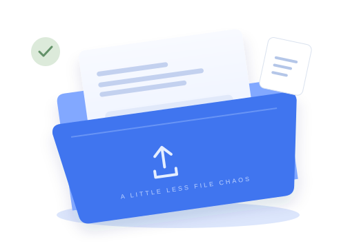

Bring your files.
Pick a document, image, archive, or any other file from your device.
Your ideas, projects, and just-one-more versions.
Give them a title. Keep them together. Get on with your day.

Try it with a fictional file. Everything resets when you reload.
| FILE NAME | SIZE | ADDED | STATUS | Actions |
|---|
No files match this view. Try another search or add a file.
Three small steps toward
one less thing on your mind.
Pick a document, image, archive, or any other file from your device.
Add a meaningful title. Find, rename, or replace it when things change.
Preview supported text and images, download original bytes, or clear a little space.
A live service needs authenticated users, a private backend, Drive authorization, and ownership checks. This static page provides none of those services.
Less guessing. More knowing where your files are.
Only into this tab's JavaScript memory. No upload request, Google Drive connection, or server storage exists here. Reloading clears all changes.
Yes, within a 10 MB per-file, 30 MB total, and 12-file local preview limit. Plain text and common raster images can be previewed; other files offer metadata and an original-byte download. Files are not executed or scanned.
Those live services are not configured. Sign in opens an honest status explanation. No passwords, Google tokens, or real account data are requested.
Edits affect only this preview. A replacement keeps the title and replaces the local bytes. Deletion requires confirmation and leaves the original file on your device untouched.